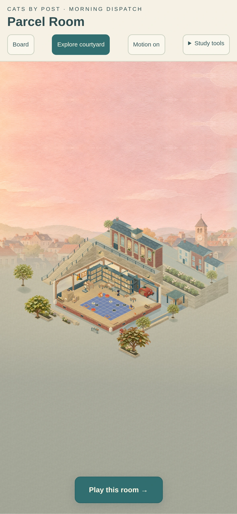
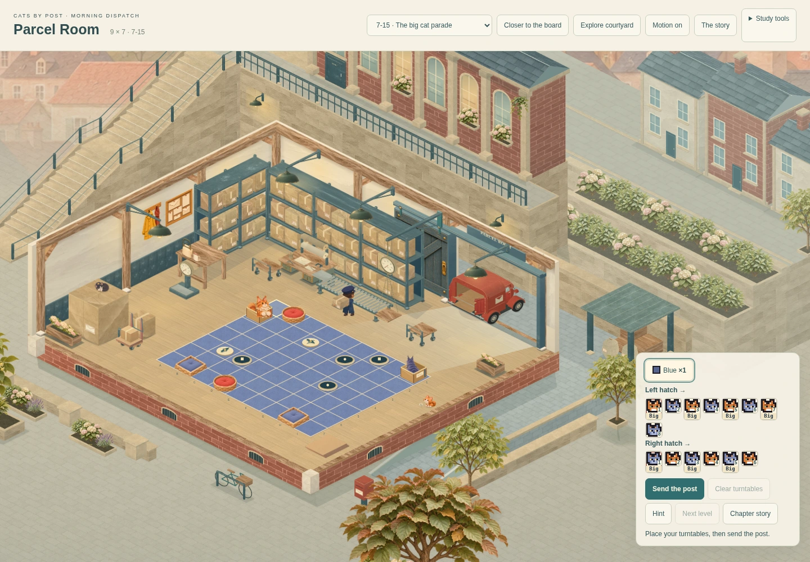

CATS BY POST · MORNING DISPATCH
Pinch without repeated scenery rebuilds
Try the courtyard → · Play the maximum board
The previous update made zoom continuous, but you still experienced pauses. This revision addresses the drawing work during a gesture. Your report that Safari no longer crashes is retained; smoothness still needs your phone retest.
Scenery now stays cached through gaps between touch events. Moving frames use a lighter image filter; newly exposed background uses a temporary lighter raster. Full detail returns when the gesture settles. Cats and postal activity continue throughout.
Measured live browser loop
Loading the recorded comparison…
| Small pinch | Before frame work, typical / p95 | After frame work, typical / p95 |
|---|
Software Chromium at393×852CSSpx/DPR3, with real animation frames and trusted touch delivery. These measurements are diagnostic; they are not iPhone Safari frame rates. Wide gestures and the one full-detail redraw after release can still take longer.
Full detail after settlement

Cache, clock and settled-pixel comparison · Before live trace · After live trace · Wide zoom-in trace · Zoom-out trace · Pinch during moving gameplay
Input and anchor checks · All deliveries and chapters · Retained memory and buffer checks · Previous continuous-input review
Maximum board

Next steps